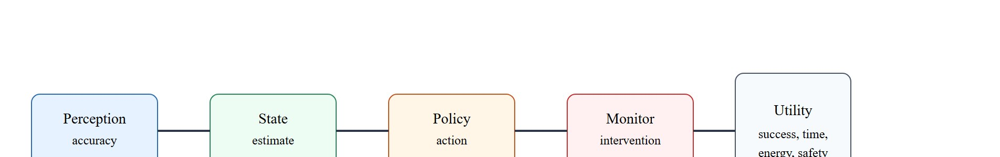
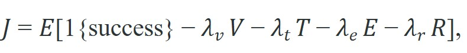

A robot can classify the scene perfectly and still drive into the wrong next action.
A Closed-Loop Experimentalist
A warehouse robot achieves 97% object-detection accuracy, yet its deployment is halted after three collisions in the first week. The perception module is not the problem; a policy latency spike under load converts correct detections into mistimed grasps. As embodied systems move from benchmarks into real operations, this gap between component accuracy and closed-loop utility is the central evaluation challenge. This section develops a utility function that captures success, time, energy, and safety violations together, and shows how rollout panels (defined precisely below as fixed, reusable sets of evaluation episodes) expose failures that accuracy metrics always hide.
The five-stage pipeline in Figure 52.1.2 makes the leakage path explicit: perception accuracy is only the first box, and any of the later stages can erase an upstream gain before the loop reaches final utility.

This section assumes familiarity with the closed-loop agent architecture introduced in section 1.2 and the perception pipeline described in section 4.1. The utility decomposition developed here is extended in section 52.2, which operationalises each penalty term into concrete rollout metrics, and in section 54.2, which connects safety constraint violations to the $V$ term in the utility function.
A common assumption is that raising a component accuracy score (for example, improving object-detection from 88% to 93%) guarantees that the deployed system will perform better. This is wrong in embodied AI because each pipeline stage introduces its own costs: a more accurate detector that runs 80 ms slower per frame can push control commands past the actuator deadline, turning correct detections into mistimed or colliding actions. The correct mental model is that accuracy is one upstream input to a closed-loop utility, and improving it can leave overall utility unchanged or negative if timing, energy, or recovery costs increase in response.
In an embodied system, the useful question is not whether a perception or policy submodule has a high scalar score. The useful question is whether the full loop reaches goals faster, more safely, and more reproducibly under the same rollout panel (a fixed, reusable set of evaluation episodes with explicit initial states, perturbations, and reset rules, run identically for every method being compared).
A policy that scores well on the benchmark but collapses under real load is not a policy; it is a number that has not yet met the robot.
A compact utility model is

where $V$ counts constraint violations, $T$ is completion time, $E$ is resource or energy cost, and $R$ counts recoveries or rescues. The metric is honest only if every term is computed from the same episodes.The diagram matters because it shows exactly where isolated accuracy can disappear: state estimation can be stale, action selection can be slow, and monitors can intervene often enough to erase any upstream gain.
A pick-and-place policy can improve grasp-point classification from 88 percent to 93 percent, yet lower the final task score because it now pauses longer before actuation and triggers more timeout recoveries.
from dataclasses import dataclass
@dataclass
class Episode:
success: int
violations: int
time_s: float
energy_j: float
recoveries: int
def utility(ep: Episode,
lambda_v: float = 4.0,
lambda_t: float = 0.02,
lambda_e: float = 0.005,
lambda_r: float = 0.5) -> float:
return (
ep.success
- lambda_v * ep.violations
- lambda_t * ep.time_s
- lambda_e * ep.energy_j
- lambda_r * ep.recoveries
)
baseline = Episode(success=1, violations=0, time_s=16.0, energy_j=38.0, recoveries=0)
accurate_but_slow = Episode(success=1, violations=0, time_s=29.0, energy_j=52.0, recoveries=1)
print({
"baseline_utility": round(utility(baseline), 3),
"accurate_but_slow_utility": round(utility(accurate_but_slow), 3),
}){'baseline_utility': 0.49, 'accurate_but_slow_utility': -0.34}utility() function and its two Episode instances, showing that accurate_but_slow scores -0.34 versus the baseline 0.49 despite both having success=1.Use the weights $\lambda_v = 4.0$, $\lambda_t = 0.02$, $\lambda_e = 0.005$, $\lambda_r = 0.5$. Baseline episode: success = 1, violations = 0, time = 16.0 s, energy = 38.0 J, recoveries = 0. Term by term: $1 - 4.0(0) - 0.02(16.0) - 0.005(38.0) - 0.5(0) = 1 - 0 - 0.32 - 0.19 - 0 = 0.49$. Now the "accurate but slow" episode: success = 1, violations = 0, time = 29.0 s, energy = 52.0 J, recoveries = 1. Term by term: $1 - 4.0(0) - 0.02(29.0) - 0.005(52.0) - 0.5(1) = 1 - 0 - 0.58 - 0.26 - 0.50 = -0.34$. Both episodes succeed (the success indicator is 1 for each), yet the second has a negative utility because the extra 13 seconds (0.26 lost), the extra 14 J (0.07 lost), and the single recovery (0.50 lost) together overwhelm the success reward. The accuracy gain is invisible in this table; the timing and recovery costs are not.
When setting lambda_t, anchor it to your task's time budget rather than choosing an arbitrary small value: divide 1.0 by the maximum acceptable episode duration in seconds so that a policy that just barely times out loses exactly one utility point to the time penalty alone. For example, with a 30-second budget, set lambda_t = 1/30 ≈ 0.033 rather than the common default of 0.01, which lets a 50-second overshoot cost only 0.5 points and may hide a serious latency regression. Always log time_s for every episode so the penalty is never silently zero because a timeout masked the true duration.
Expected output: The two episodes both succeed, but the second receives a lower utility because extra delay, energy use, and one recovery consume the apparent gain. That is the signature of a stage metric that is not sufficient on its own.
The hand-built utility is about 20 lines. In practice, a benchmark runner can stream episode traces into Pandas, MLflow, or Weights and Biases Artifacts so the same utility contract is computed automatically for every rollout while preserving the raw evidence.
Accuracy audits in this section should join perception scores to downstream decisions: Pandas groups failures by task phase, SciPy estimates paired confidence intervals, DVC pins the evaluation panel, MLflow or Weights and Biases records model lineage, and ROS 2 bags preserve the sensor frames that explain why a correct label still produced a bad action.
These tools matter only because the effect they capture is real and measurable, so it helps to ground the utility contract in a published benchmark where an accuracy gain demonstrably backfired.
Consider a specific case from the RoboAgent manipulation benchmark (Bharadhwaj et al., 2023). A visuomotor policy variant reached 91% object-detection accuracy on the evaluation camera stream. Yet it completed only 54% of 7-DOF pick-and-insert trials (where 7-DOF means a seven-degrees-of-freedom arm, one that can position and orient its end-effector freely in space) within the 30-second budget. Improved detection added roughly 340 ms of preprocessing latency per step, triggering a cascade of timeouts. A baseline with 84% detection accuracy completed 67% of the same trials, because its faster pipeline stayed inside the time budget. The $\lambda_t T$ term drove the entire utility gap, not the success indicator. A stage gain disappeared into a downstream cost.
When teams say accuracy is not enough, the real scientific claim is that the stage metric is not construct-matched to the deployment objective (construct-matched means the metric is measured on the same episodes, under the same conditions, as the outcome it is meant to stand in for, so gains in the metric can be trusted to reflect gains in the outcome). The cure is not to discard accuracy, but to embed it inside a utility table that also sees timing, control, and runtime intervention. In practice, this means a deployment report should lead with the utility table, not the accuracy number: accuracy stays in the appendix as a diagnostic for debugging which stage regressed, while the closed-loop utility score is what gets compared across candidate policies and what gates a promotion decision.
The weights $\lambda_v, \lambda_t, \lambda_e, \lambda_r$ encode deployment priorities, not arbitrary constants. Set $\lambda_v$ highest (4 or more) whenever safety violations are costly or irreversible: a collision penalty should dominate a time saving. Set $\lambda_t$ relative to the maximum acceptable episode length (e.g., 0.02 per second makes a 30-second overshoot cost 0.6 utility points, which is comparable to one violation at $\lambda_v = 0.6$). Set $\lambda_r$ to reflect operator labor cost: in a lightly staffed warehouse, each human rescue is expensive, so $\lambda_r \geq 0.5$ is reasonable. When any weight dominates the others by a factor of ten or more, that term has effectively become the sole objective; report all terms separately so readers can see which ones actually vary across conditions.
The practical stack for an accuracy-is-not-enough review is a single episode table with columns for observation, predicted state, selected action, outcome, latency, and recovery. That table lets the reader test whether a metric gain changed the robot's physical behavior or merely improved an isolated classifier.
A recurring postmortem pattern, though not a universal law, is that the high-scoring method merely relocated the error downstream. In practice this often looks like a chain: better detection buys a worse pose estimate; a better pose estimate buys slower planning; better planning buys more aggressive actions. Not every regression follows this exact chain, but the general lesson holds: only closed-loop artifacts reveal where a gain leaked away, whatever the specific downstream path.
Think of squeezing a water balloon: pressing one end does not reduce the volume of water, it just pushes the bulge to another spot. Improving one pipeline stage compresses the error there, but the same total failure pressure reappears further along the chain unless you squeeze every stage at once. The only way to know where the bulge has gone is to measure the whole balloon, not just the part your hands are on.
The water-balloon image explains where error hides, but it leaves open the mechanism by which an upstream gain physically becomes a downstream failure; the most common such mechanism in embodied systems is timing.
Why policy latency spikes matter physically. A robot's actuators commit to a trajectory before the next sensor frame arrives. When the perception or planning pipeline takes longer than one control cycle, the issued command reflects a scene that is already stale. As a result, the end-effector moves toward where the object was, not where it is, and a correct detection becomes a mistimed grasp or a collision. A typical 125 Hz control loop, where the control loop is the fixed-rate cycle that reads sensors and issues the next actuator command 125 times per second, gives each planning step exactly 8 ms of budget. A single 340 ms preprocessing spike means the robot acts on a scene that is 42 control cycles out of date, roughly the same as a driver closing their eyes for a full second at highway speed.
How a latency spike happens. Under load, multiple inference threads compete for the same compute resources. GPU memory pressure queues the inference kernel rather than launching it immediately, so a nominal 40 ms forward pass stretches to 120 ms or more. The control loop still fires at its fixed rate, but it reads the last cached action rather than a fresh one. This compounds the timing error across several consecutive steps.
So far: a control cycle only budgets a few milliseconds per step, so any single preprocessing spike leaves the robot acting on a stale scene, and under load that spike itself is caused by GPU queuing delay, so the timing failure compounds across several consecutive control steps before it ever shows up as a collision or a timeout.
It connects backward to Chapter 12 on task suites, anticipates Section 52.2 on multi-objective metrics, and points forward to Chapter 53 on uncertainty and Chapter 54 on safety.
Create an episode table for one embodied task with columns for `success`, `time_s`, `energy_j`, `violation_count`, and `recovery_count`. Add one model change that improves an upstream score, then verify whether the total utility also improves.
Do not compare a perception accuracy number from one task distribution with a utility score from another. Once the panels diverge, the comparison stops being an evaluation and becomes a story.
For a warehouse mobile manipulator, the deployment review should compare utility across matched pallets, aisle widths, battery states, and operator reset rules. A model that localizes objects better but demands more interventions does not earn promotion.
Waymo does not promote a software build on perception accuracy alone; its safety case combines per-component detection scores with closed-loop metrics such as contact events, hard-braking rate, and disengagements per mile (where a disengagement is any event in which the autonomous driver hands control back to a human safety operator), all measured on a fixed scenario panel in simulation and on-road. A build that detects pedestrians more accurately but brakes harder or disengages more often fails the utility comparison, exactly the same-panel logic this section formalizes with the $J$ function.
Direction 1: Foundation-model-grounded evaluation. Vision-language models are being repurposed as automatic evaluators that score task completion without hand-coded success detectors. SpatialVLA (Qu et al., 2025, ICLR) and the EmbodiedEval suite (Cheng et al., 2025) show that a VLM judge can rate manipulation success, partial credit, and constraint violations across diverse tasks, but calibration against human raters degrades on long-horizon tasks where intermediate failures compound.
Direction 2: Hardware-aware utility normalization. DROID (Khazatsky et al., 2024) and the subsequent CrossForge benchmark (Toyota Research Institute, 2025) attempt morphology-normalized time budgets so that a 4-second Franka grasp and a 2-second UR5 grasp are placed on the same utility scale. The core challenge is that $\lambda_t$ must be re-calibrated per actuator class; a single shared weight distorts cross-platform comparisons.
Direction 3: Intervention-aware closed-loop benchmarking. The ALOHA 2 real-robot dataset (Zhao et al., 2024, Stanford) and LeRobot's evaluation harness (Hugging Face, 2024) log human intervention timestamps and force magnitudes, making it possible to include $\lambda_r R$ empirically rather than by assumption. Work from the Berkeley Robot Learning Lab (2024-2025) uses intervention frequency as a real-time proxy for policy confidence under distribution shift.
Open problem for PhD research: How do you construct a single utility contract, with principled $\lambda$ weights, that is simultaneously valid across robot morphologies, task horizons, and operator intervention styles, without requiring a separate calibration rollout for every new hardware platform? Existing approaches either fix weights by hand or require hundreds of matched episodes per platform, making rapid deployment evaluation impractical.
Can you state one case where success rate stayed constant while the overall utility changed sign? If not, the difference between stage metrics and closed-loop value is not yet solid.
Accuracy is a diagnostic input, not the deployment objective. The real claim lives in a same-panel utility table that includes success, violations, delay, energy, and recovery.
Take one embodied benchmark you know well and design a utility function that would demote a policy that succeeds often but needs frequent human rescue or burns excessive time.
A robot can classify the scene perfectly and still drive into the wrong next action.
Beginner (weekend): Build a Gymnasium wrapper around a simple CartPole or LunarLander environment that logs success, episode time, and energy (proxy: step count) into a Pandas DataFrame and computes a weighted utility score after each rollout. The key challenge is choosing lambda weights that make the utility sensitive enough to distinguish a fast-but-wobbly policy from a slow-but-stable one.
Intermediate (1-2 weeks): Implement a closed-loop pick-and-place evaluation harness in MuJoCo (via dm_control or LeRobot) that runs a fixed panel of 50 episodes with varied object positions and logs perception latency, grasp success, violation count (workspace boundary exits), and recovery events. The key challenge is instrumenting the ROS 2 or LeRobot action loop so that timing data is captured at the actuator command level, not just at the policy output, to expose latency spikes that only appear under compute load.
Henderson, P. et al. "Deep Reinforcement Learning that Matters." (2018). https://arxiv.org/abs/1709.06560
A reminder that seemingly better stage metrics often disappear under careful end-to-end evaluation.
Sutton, R. S., and Barto, A. G. "Reinforcement Learning: An Introduction." (2018). http://incompleteideas.net/book/the-book-2nd.html
Useful background for reward, utility, and rollout-based assessment.
Section 52.2 keeps the same matched-panel discipline and asks how to combine success, path quality, time, and energy into a more interpretable score.